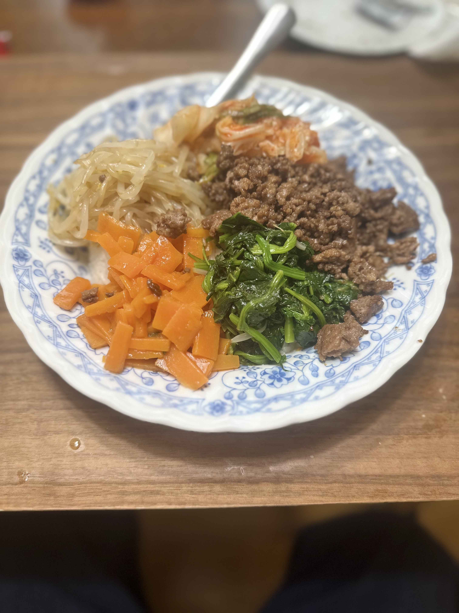
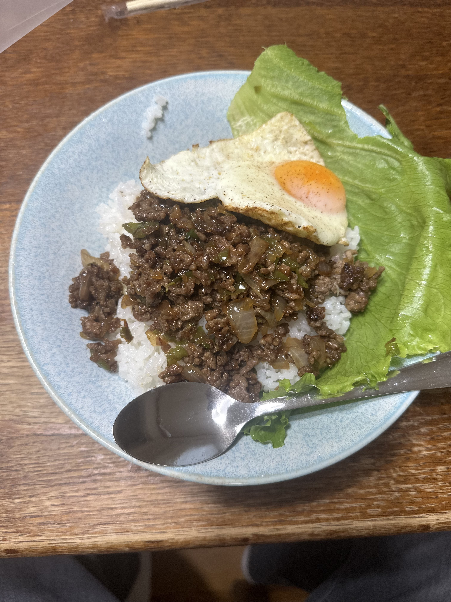

| data | dinner | cookpad | memo |
| 1日 | |||
| 2日 | |||
| 3日 | |||
| 4日 | |||
| 5日 | |||
| 6日 | |||
| 7日 | |||
| 8日 |  |
ビビンバ 3種のナムル |
半熟卵忘れてしまった |
| 9日 |  | ガパオライス | 目玉焼き →水を少し入れて蒸らす |
| 10日 |  |
生姜焼き | 革命！！ スライサー購入！！ |
| 11日 | |||
| 12日 | |||
| 13日 | |||
| 14日 | |||
| 15日 | |||
| 16日 | |||
| 17日 | |||
| 18日 | |||
| 19日 | |||
| 20日 | |||
| 21日 | |||
| 22日 | |||
| 23日 | |||
| 24日 | |||
| 25日 | |||
| 26日 | |||
| 27日 | |||
| 28日 | |||
| 29日 | |||
| 30 | |||
| 31 |